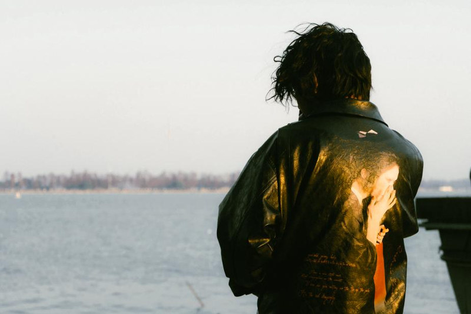
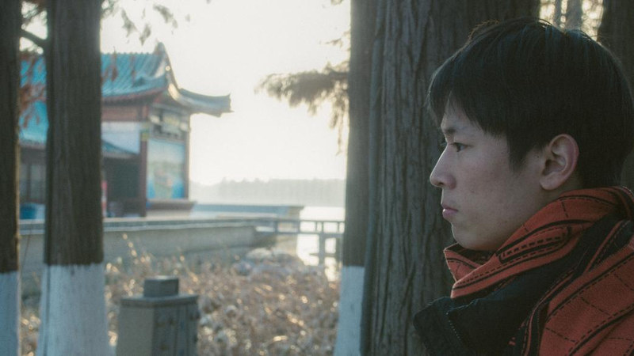
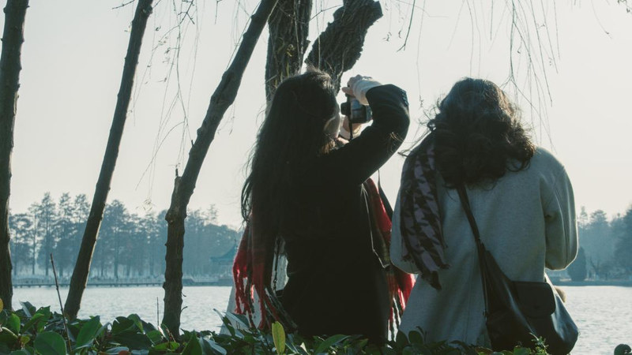

我的，东湖



我的，东湖2023–ongoing
我在互联网平台看见“跳东湖”的活动，顺藤摸瓜找到了曾经围绕东湖展开的一系列公共艺术行动。多年过去，开发并没有停止，太阳照常升起，人们照常经过这片湖。于是我开始拍摄他们面对东湖的样子。



我在互联网平台看见“跳东湖”的活动，顺藤摸瓜找到了曾经围绕东湖展开的一系列公共艺术行动。多年过去，开发并没有停止，太阳照常升起，人们照常经过这片湖。于是我开始拍摄他们面对东湖的样子。